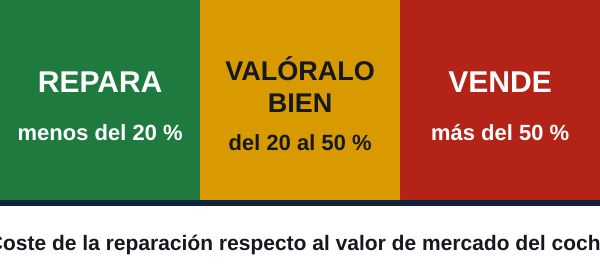

¿Cuándo merece la pena reparar tu coche?
La regla más usada por talleres y tasadores es comparar el coste de la reparación con el valor de mercado del vehículo. Si la reparación cuesta menos del 20% de ese valor, casi siempre conviene repararlo: el coche seguirá dándote varios años más de uso por una inversión pequeña en proporción a lo que vale.
Entre el 20% y el 50% la decisión ya no es tan clara. Aquí entran en juego factores como el estado general de mantenimiento, los kilómetros restantes hasta la siguiente revisión importante, y si el coche tiene un valor sentimental o práctico (por ejemplo, si lo necesitas para trabajar y no puedes permitirte quedarte sin vehículo varias semanas mientras buscas otro).
Por encima del 50% del valor de mercado, reparar rara vez es rentable: ese dinero suele rendir más como entrada de un coche de sustitución, salvo que se trate de un vehículo clásico o de valor especial.
Señales de que es mejor vender tu coche
- La avería afecta a un componente estructural (motor, caja de cambios) en un coche de más de 10-12 años.
- Has tenido varias averías importantes en los últimos 12 meses: suele indicar que vienen más.
- El mantenimiento no está al día y desconoces el historial completo del vehículo.
- El presupuesto de reparación supera el 50% del valor de mercado estimado del coche.
- Necesitas el dinero ahora y un coche averiado de bajo valor inmoviliza capital que podrías usar mejor.
Comparativa por tipo de avería
No todas las averías son iguales de cara a la decisión de reparar o vender. Esta tabla resume el riesgo y el coste habitual de cada tipo:
| Tipo de avería | Coste habitual | Riesgo de recurrencia | Recomendación general |
|---|---|---|---|
| Motor (gripado, culata) | Alto (1.500-4.000 €) | Medio-alto | Reparar solo si el resto del coche está en muy buen estado |
| Caja de cambios | Alto (1.200-3.500 €) | Medio | Comparar siempre con el valor de mercado antes de decidir |
| Electrónica | Variable (200-2.000 €) | Medio-alto | Pedir diagnóstico exacto; los fallos intermitentes son los más arriesgados |
| Frenos | Bajo (150-600 €) | Bajo | Reparar casi siempre, es una avería de seguridad y coste contenido |
| Carrocería | Variable (300-3.000 €) | Bajo | Depende del valor estético y de reventa del modelo |
¿Y si el coche tiene mantenimiento al día?
Un historial de mantenimiento completo (cambios de aceite, correas, ITV en regla) reduce considerablemente el riesgo de que aparezcan averías adicionales tras la reparación. En nuestra calculadora este factor ajusta el resultado final, porque un coche bien cuidado tolera un porcentaje de reparación más alto antes de que convenga vender.
Si tras leer esto todavía tienes dudas, prueba la calculadora gratuita con los datos reales de tu coche, o consulta nuestras preguntas frecuentes más abajo.
Guías por tipo de avería
- Batería del coche agotada: ¿cambiarla o vender el coche?
- Correa de distribución rota: ¿reparar el coche o venderlo?
- Coche con la ITV caducada o suspendida: ¿reparo o vendo?
- Motor gripado: ¿reparar o vender el coche?
- Cuánto cuesta cambiar el embrague (y si compensa repararlo o vender el coche)
- Tasación de coche averiado: cuánto vale y cómo tasarlo sin repararlo
- El coche no arranca: qué le pasa según el ruido que hace
- Junta de culata quemada: síntomas, precio y si compensa repararla
- Papeles para vender un coche: transferencia, contrato y qué hacer después
- Dónde vender un coche averiado y cuánto te van a pagar
- Caja de cambios averiada: síntomas, precios y si reparar o vender el coche
- Turbo roto: síntomas, precio de la reparación y si compensa
- Ver todas las guías de coches →